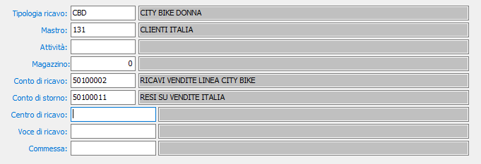
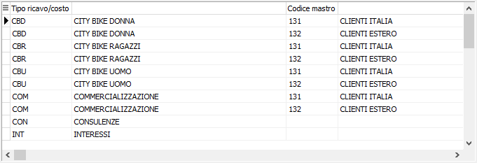

Contropartite ricavi
La tabella contiene gli elementi di collegamento necessari per la contabilizzazione delle fatture di vendita, e deve pertanto essere trattato dagli utenti che utilizzano i programmi di fatturazione attiva.
Nella anagrafica degli articoli è presente un campo denominato Tipologia ricavo, in cui viene inserito un codice idoneo a individuare il conto di ricavo abbinato all’articolo stesso.
Le contropartite ricavi di cui ci occupiamo in questa sede presentano appunto, come primo elemento della chiave di ricerca di una contropartita di vendita, lo stesso codice di Tipologia ricavo. Questo, abbinato al codice di un mastro clienti, all’eventuale codice di attività presente nelle anagrafiche clienti e ad un eventuale codice magazzino, forma la chiave abbinata ad uno specifico sottoconto di ricavo.

Con questa modalità, pur essendo presente nell’anagrafica del prodotto un solo codice di Tipologia ricavo, è possibile imputare la vendita del prodotto a conti di ricavo diversi in funzione del mastro clienti e/o del tipo di attività del cliente stesso, o ancora in funzione del magazzino aziendale da cui è uscita la merce in vendita.

TIPOLOGIA DI RICAVO: codice alfanumerico di 3 caratteri presente in tabella Tipologie di ricavo. È il primo degli elementi che concorrono a definire il conto di ricavo da utilizzare a livello di contabilizzazione delle fatture di vendita. Sul campo sono attive le funzioni di ricerca (F9) e manutenzione (CTRL+W) sulla tabella stessa.
MASTRO: codice alfanumerico di 3 caratteri presente in tabella Mastri. È il secondo degli elementi che concorrono a definire il conto di ricavo da utilizzare a livello di contabilizzazione delle fatture di vendita. Sul campo sono attive le funzioni di ricerca (F9) e manutenzione (CTRL+W) sulla tabella stessa.
ATTIVITÀ: codice alfanumerico di 8 caratteri presente in tabella Attività. È il terzo degli elementi che concorrono a definire il conto di ricavo da utilizzare a livello di contabilizzazione delle fatture di vendita. Sul campo sono attive le funzioni di ricerca (F9) e manutenzione (CTRL+W) sulla tabella stessa.
MAGAZZINO: codice numerico in tabella Magazzini. È il quarto degli elementi che concorrono a definire il conto di ricavo da utilizzare a livello di contabilizzazione delle fatture di vendita. Sul campo sono attive le funzioni di ricerca (F9) e manutenzione (CTRL+W) sulla tabella stessa.
CONTO DI RICAVO: codice alfanumerico di 8 caratteri presente nella tabella Sottoconti. È il conto di ricavo che verrà utilizzato durante la contabilizzazione delle fatture di vendita in presenza della precedente combinazione di elementi selettivi. Sul campo sono attive le funzioni di ricerca (F9) e manutenzione (CTRL+W) sulla tabella stessa.
CONTO DI STORNO: codice alfanumerico di 8 caratteri presente nella tabella Sottoconti. È il conto di ricavo o di costo che verrà utilizzato durante la contabilizzazione delle note di accredito a clienti in presenza della precedente combinazione di elementi selettivi. Sul campo sono attive le funzioni di ricerca (F9) e manutenzione (CTRL+W) sulla tabella stessa.
CENTRO DI RICAVO: eventuale codice alfanumerico di 8 caratteri presente nella tabella Centri di costo/ricavo. Indica il centro di ricavo a cui devono essere imputati, in contabilità analitica, i ricavi durante la contabilizzazione delle fatture di vendita in presenza della precedente combinazione di elementi selettivi. Sul campo sono attive le funzioni di ricerca (F9) e manutenzione (CTRL+W) sulla tabella stessa.